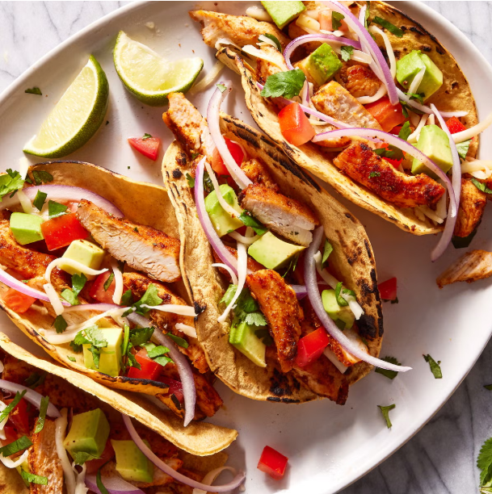

Home
Recipe's

How To Make Chicken Tacos
Ingredients
Personally, I can’t get enough of tacos in every shape and form. That
being said, when I'm looking for something simple to load up with all of
my favorite toppings, I turn to these simple chicken tacos. While far from
being authentic, these Americanized tacos load up corn tortillas with
seasoned chicken and any variety of toppings to make your perfect taco.
Pair with a classic margarita, and your Taco Tuesday (or Wednesday, or
Thursday…) will be more than complete.
- 3 Tbsp. extra-virgin olive oil
-
4 (6- to 8-oz.) boneless, skinless chicken breasts, cut into 1" strips
- Kosher salt
- Freshly ground black pepper
- 2 tsp. chili powder
- 2 tsp. ground cumin
- 1/2 tsp. garlic powder
- 1/4 tsp. cayenne
- 1/4 tsp. paprika
-
8 corn tortillas, warmed Sour cream, thinly sliced red onion, finely
chopped tomatoes, shredded
-
Monterey Jack, finely chopped avocados, finely chopped fresh cilantro,
and lime wedges, for serving
Steps
- In a large skillet over medium heat, heat oil.
- Season chicken with salt and pepper.
- Cook, stirring occasionally, until golden brown, about 6 minutes.
-
Stir and adding more oil if mixture is too dry, until coated, about 1
minute more.
- Divide chicken among tortillas, then top with desired toppings.